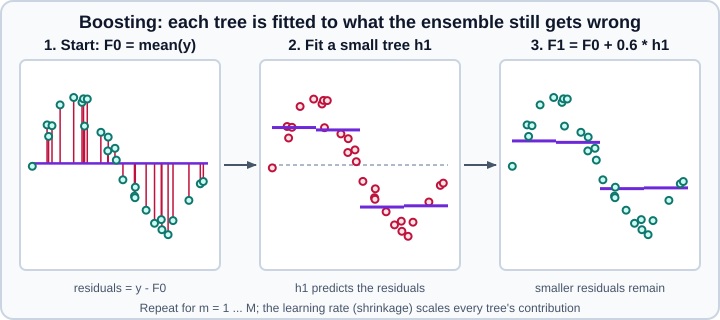

Gradient Boosting & HistGradientBoosting
|
This content was generated with the assistance of AI and should be verified against the official documentation before being relied on in production. |
Gradient-boosted decision trees are the usual first choice for tabular data: they handle non-linear effects and interactions, need almost no feature scaling and are very competitive with far more complex models. This page targets scikit-learn 1.9, together with NumPy 2.5 and pandas 3.1, and it was checked in October 2026. Examples target Python 3.13 or 3.14. Every example was run on Python 3.13.18, NumPy 2.5.4, pandas 3.1.0 and scikit-learn 1.9.1; the printed output is the real output of that run, and numbers such as scores and iteration counts will differ a little with other versions, platforms or seeds. The page continues from Decision Trees and Random Forests & Bagging, and it is followed by Voting, Stacking & Multiclass, which combines boosted models with others. The package is installed as scikit-learn and imported as sklearn; see the section overview for the naming note.
Two implementations
scikit-learn ships two families of gradient-boosted trees. They share the idea but differ in the algorithm used to find splits, and therefore in speed and in features.
HistGradientBoostingClassifier and HistGradientBoostingRegressor |
GradientBoostingClassifier and GradientBoostingRegressor |
|
|---|---|---|
Split search |
Bins every feature into at most |
Sorts the raw feature values and evaluates exact thresholds |
Speed |
Orders of magnitude faster once there are more than tens of thousands of samples; multithreaded with OpenMP |
Slower, single-threaded; may be preferable for small samples because binning can make split points too coarse |
Missing values |
Native: no imputer needed |
Not supported by the estimator; impute first |
Categorical features |
Native, through |
Not supported; encode first |
Number of trees |
|
|
Early stopping |
|
Opt in with |
Losses |
Regression: squared error, absolute error, gamma, Poisson, quantile; classification: log loss |
Regression: squared error, absolute error, Huber, quantile; classification: log loss, exponential |
Monotonic and interaction constraints |
Yes |
No |
Sample subsampling and out-of-bag estimates |
No (the |
Yes: |
The histogram estimators were introduced in scikit-learn 0.21, inspired by LightGBM. They are no longer experimental: the old from sklearn.experimental import enable_hist_gradient_boosting line that early tutorials show is a no-op and can be deleted. Missing values and categorical features are what make them the better default; the classic estimators remain for small data sets, the exponential and Huber losses, and out-of-bag estimation.
How boosting works
A boosted model is a sum of small trees built one after another. It starts from a constant prediction \(F_0\), usually the mean of the target for squared error. At each iteration \(m\) the algorithm computes, for every training sample, the negative gradient of the loss with respect to the current prediction (for squared error this is simply the residual \(y_i - F_{ m-1 }(x_i)\)), fits a small regression tree \(h_m\) to those values, and adds a shrunken copy of it to the model:
\[F_m(x) = F_{ m-1 }(x) + \nu \, h_m(x)\]
where \(\nu\) is the learning rate. For classification the trees fit the gradient of the log loss, and the final sum is passed through a sigmoid (binary) or softmax (multiclass) to give probabilities. For multiclass problems one tree per class is built at every iteration.

The learning rate and the number of trees pull in opposite directions: a smaller learning rate needs more trees but generalises better. Trees are kept deliberately weak (a few leaves), because each one only has to correct what the previous ones missed, and strong trees overfit quickly.
The histogram estimators also use second-order information (the Hessian of the loss), in the manner popularised by XGBoost, and an L2 penalty l2_regularization on the leaf values. They do not implement the penalty on the number of leaves described in the XGBoost paper; max_leaf_nodes and min_samples_leaf play that role.
HistGradientBoosting first steps
The estimators follow the usual API, and the defaults are good enough to be a strong baseline. The comparison below runs both families on the same synthetic classification problem.
import sklearn
from sklearn.datasets import make_classification
from sklearn.ensemble import GradientBoostingClassifier, HistGradientBoostingClassifier
from sklearn.metrics import accuracy_score
from sklearn.model_selection import train_test_split
print(sklearn.__version__)
X, y = make_classification(n_samples=2000, n_features=10, n_informative=5, random_state=0)
X_tr, X_te, y_tr, y_te = train_test_split(X, y, random_state=0)
hgb = HistGradientBoostingClassifier(random_state=0).fit(X_tr, y_tr)
print("HGB accuracy:", round(accuracy_score(y_te, hgb.predict(X_te)), 3), "iterations:", hgb.n_iter_)
gb = GradientBoostingClassifier(random_state=0).fit(X_tr, y_tr)
print("GB accuracy:", round(accuracy_score(y_te, gb.predict(X_te)), 3), "trees:", gb.n_estimators_)1.9.1
HGB accuracy: 0.914 iterations: 100
GB accuracy: 0.91 trees: 100On 1,500 training rows the two are equivalent, as the documentation predicts. The speed difference appears with more rows: the histogram version scales to millions of samples, while the classic one becomes impractical beyond a few tens of thousands.
The main parameters of the histogram estimators, with the 1.9 defaults, are:
| Parameter | Default | Meaning |
|---|---|---|
|
|
The loss to minimise. Classification has only |
|
|
Shrinkage applied to every tree; use 0.01 to 0.1 for the best results with a large |
|
|
Maximum number of boosting iterations (one tree per iteration, or one per class for multiclass). It replaces |
|
|
Maximum leaves per tree; the main complexity control. |
|
|
Optional depth limit; leaving it unset and tuning |
|
|
Minimum samples in a leaf; raise it on noisy or small data. |
|
|
L2 penalty on the leaf values. |
|
|
Fraction of features considered at each split (added in 1.4); lower values add randomness and speed. |
|
|
Maximum number of bins per numeric feature (at most 255, plus one bin always reserved for missing values) and the cap on categorical cardinality. |
|
|
Which columns are categorical; see the dedicated section. |
|
|
Constraints, covered below. |
|
|
Stop when the validation score stops improving; on by default from 10,000 training samples. |
|
|
Early-stopping controls. |
|
|
Classifier only (added in 1.2): a dictionary or |
|
|
Continue training an already fitted model with a larger |
|
|
Seed for binning, the validation split and |
Early stopping
Boosting keeps reducing the training loss for as long as you add trees, so the number of iterations has to be limited. The usual approach is to set max_iter high, enable early stopping and let the validation score decide. The estimator holds out validation_fraction of the training data, evaluates the score after every iteration and stops when it has not improved for n_iter_no_change iterations.
from sklearn.datasets import make_classification
from sklearn.ensemble import HistGradientBoostingClassifier
from sklearn.model_selection import train_test_split
X, y = make_classification(n_samples=2000, n_features=10, n_informative=5, random_state=0)
X_tr, X_te, y_tr, y_te = train_test_split(X, y, random_state=0)
for early in [False, True]:
model = HistGradientBoostingClassifier(
max_iter=500, learning_rate=0.1, early_stopping=early,
n_iter_no_change=10, validation_fraction=0.2, random_state=0,
).fit(X_tr, y_tr)
print("early_stopping", early, "n_iter_", model.n_iter_, "test acc", round(model.score(X_te, y_te), 3))
# the default "auto" depends on the training-set size
small = HistGradientBoostingClassifier(random_state=0, max_iter=500).fit(X_tr, y_tr)
print("auto, 1,500 rows:", small.n_iter_)
X_big, y_big = make_classification(n_samples=12000, n_features=10, n_informative=5, random_state=0)
big = HistGradientBoostingClassifier(random_state=0, max_iter=500).fit(X_big, y_big)
print("auto, 12,000 rows:", big.n_iter_)early_stopping False n_iter_ 500 test acc 0.92
early_stopping True n_iter_ 80 test acc 0.914
auto, 1,500 rows: 500
auto, 12,000 rows: 151With the default early_stopping="auto", stopping is enabled only when the training set has at least 10,000 samples, so a 1,500-row training set silently runs all 500 iterations. Set it explicitly to True on small data. The score used is the validation loss by default; scoring accepts any scorer name, but a callable scorer is significantly slower than the loss because the loss is computed inside the training loop. The fitted attributes n_iter_, train_score_ and validation_score_ record what happened.
Since scikit-learn 1.7 you can pass your own validation set to fit with X_val, y_val and sample_weight_val, instead of letting the estimator carve one out of the training data. This is the right choice when the rows are time ordered or grouped and a random split would leak. Inside a Pipeline, the validation features can be transformed like the training features with Pipeline(..., transform_input=["X_val"]).
from sklearn.model_selection import train_test_split
X_a, X_v, y_a, y_v = train_test_split(X_tr, y_tr, test_size=0.2, random_state=1)
model = HistGradientBoostingClassifier(max_iter=500, early_stopping=True, random_state=0)
model.fit(X_a, y_a, X_val=X_v, y_val=y_v)
print("explicit validation set, n_iter_ =", model.n_iter_)
# accuracy after every 10th iteration on the test set
print([round(float((p == y_te).mean()), 3) for p in list(model.staged_predict(X_te))[::10]])explicit validation set, n_iter_ = 60
[0.882, 0.892, 0.892, 0.902, 0.91, 0.906]staged_predict, staged_predict_proba and staged_decision_function return the prediction after each iteration, which is how you draw a learning curve over the number of trees without refitting.
Missing values
The histogram estimators handle NaN natively and need no imputer. During training, at each split the samples with missing values are tried on the left and on the right and sent wherever the gain is higher. If a feature had no missing values in training, samples with missing values at prediction time are sent to the child with the most samples. Because the decision is learned per split, the model can exploit a predictive missingness pattern without an indicator column.
import numpy as np
import pandas as pd
from sklearn.ensemble import HistGradientBoostingRegressor
from sklearn.model_selection import train_test_split
rng = np.random.default_rng(0)
n = 3000
df = pd.DataFrame({
"city": pd.Categorical(rng.choice(["Madrid", "Paris", "Rome", "Berlin"], n)),
"area": rng.uniform(30, 200, n),
"age": rng.integers(0, 60, n).astype(float),
})
base = {"Madrid": 3.0, "Paris": 5.0, "Rome": 2.0, "Berlin": 1.0}
y = df["city"].map(base).astype(float) * 50 + df["area"] * 2 - df["age"] * 0.5 + rng.normal(0, 5, n)
df.loc[rng.random(n) < 0.1, "age"] = np.nan # 10% missing ages
print(df.dtypes.to_dict())
X_tr, X_te, y_tr, y_te = train_test_split(df, y, random_state=0)
model = HistGradientBoostingRegressor(random_state=0).fit(X_tr, y_tr)
print("R2:", round(model.score(X_te, y_te), 3))
print("rows with a missing age:", model.predict(X_te[X_te["age"].isna()].head(2)).round(1)){'city': CategoricalDtype(categories=['Berlin', 'Madrid', 'Paris', 'Rome'], ordered=False, categories_dtype=str), 'area': dtype('float64'), 'age': dtype('float64')}
R2: 0.997
rows with a missing age: [437.2 282.6]Note the categories_dtype=str in the output: in pandas 3 the categories of a column built from Python strings are held in the new str dtype. Missing values are supported by the trees of the other ensembles too (decision trees and random forests accept NaN), but the classic GradientBoostingClassifier and GradientBoostingRegressor still require a complete matrix.
Categorical features
Nominal categories have no order, and ordinal-encoding them forces the trees to find splits on an arbitrary numeric order. The histogram estimators can split on subsets of categories directly. categorical_features accepts a boolean mask, a list of column indices, a list of column names (when X is a data frame), the string "from_dtype" or None. Since scikit-learn 1.6 the default is "from_dtype": every data-frame column with a categorical dtype (pandas category, or a Polars Categorical or Enum) is treated as categorical, with no extra configuration. The earlier default was None.
The rules to remember are:
-
Each categorical feature can have at most
max_binsdistinct categories.max_binsitself cannot exceed 255, so for higher cardinality use a target encoder or group the rare levels. One further bin is always reserved for missing values. -
Categories encoded as numbers are converted to floating point, so
1.0and1are the same category, and negative numeric values are treated as missing. -
Missing values in training are treated as a category of their own. If there were none in training, they are sent to the child with the most samples at prediction time.
-
Categories not seen during
fitare treated as missing values at prediction time. No error is raised.
pandas 3 changes one detail that matters here. A column of Python strings now has the str dtype (StringDtype), and that is not the category dtype, so "from_dtype" does not detect it and the estimator fails when it tries to convert the strings to floats. Convert the column to category, or encode it in a pipeline and declare which output columns are categorical.
import numpy as np
import pandas as pd
from sklearn.compose import ColumnTransformer
from sklearn.ensemble import HistGradientBoostingClassifier
from sklearn.pipeline import make_pipeline
from sklearn.preprocessing import OrdinalEncoder
rng = np.random.default_rng(1)
n = 1500
df = pd.DataFrame({"plan": rng.choice(["free", "pro", "team"], n), "usage": rng.gamma(2.0, 3.0, n)})
y = ((df["plan"] == "pro") ^ (df["usage"] > 6)).astype(int)
print(df.dtypes.to_dict())
try:
HistGradientBoostingClassifier(random_state=0).fit(df, y) # str dtype is not "category"
except ValueError as error:
print("ValueError:", error)
# Option 1: use the category dtype
df_cat = df.assign(plan=df["plan"].astype("category"))
model = HistGradientBoostingClassifier(random_state=0).fit(df_cat, y)
print("category dtype:", round(model.score(df_cat, y), 3), model.is_categorical_)
# Option 2: encode inside a pipeline and name the categorical column
pre = ColumnTransformer(
[("cat", OrdinalEncoder(handle_unknown="use_encoded_value", unknown_value=np.nan,
encoded_missing_value=np.nan), ["plan"])],
remainder="passthrough", verbose_feature_names_out=False,
).set_output(transform="pandas")
pipe = make_pipeline(pre, HistGradientBoostingClassifier(categorical_features=["plan"], random_state=0))
pipe.fit(df, y)
print("pipeline:", round(pipe.score(df, y), 3), pipe[-1].is_categorical_){'plan': <StringDtype(na_value=nan)>, 'usage': dtype('float64')}
ValueError: could not convert string to float: 'pro'
category dtype: 0.999 [ True False]
pipeline: 0.999 [ True False]The score above is computed on the training data to keep the example short; use a held-out split for real evaluation. In the pipeline version, unknown_value=np.nan makes the encoder map unseen categories to missing, which the boosted model then handles. More encoders are in Encoding Categorical Features, and column routing in ColumnTransformer & Heterogeneous Data.
On the toy data above there are only four categories, so native handling and ordinal codes score the same (R² of 0.997 in a run of both). The advantage of native categorical splits grows with cardinality and with interactions between categories; measure it on your own data rather than assuming it.
Monotonic constraints
When domain knowledge says a feature can only push the prediction one way (a larger house is never cheaper, all else equal), monotonic_cst forces it. The list has one entry per feature: 1 for a monotonic increase, -1 for a decrease, 0 for no constraint. A dictionary keyed by feature name is accepted since 1.2.
import numpy as np
from sklearn.ensemble import HistGradientBoostingRegressor
rng = np.random.default_rng(0)
n = 2000
X = rng.uniform(-1, 1, size=(n, 3))
y = 2 * X[:, 0] - X[:, 1] + 0.5 * np.sin(6 * X[:, 0]) + X[:, 0] * X[:, 2] + rng.normal(0, 0.3, n)
free = HistGradientBoostingRegressor(random_state=0).fit(X, y)
mono = HistGradientBoostingRegressor(monotonic_cst=[1, -1, 0], random_state=0).fit(X, y)
grid = np.linspace(-1, 1, 200)
probe = np.zeros((200, 3))
probe[:, 0] = grid # vary feature 0, hold the others at 0
for name, model in [("free", free), ("constrained", mono)]:
curve = model.predict(probe)
print(name, "non-decreasing in feature 0:", bool(np.all(np.diff(curve) >= -1e-12)),
"| smallest step:", round(float(np.diff(curve).min()), 4))
print("R2 free:", round(free.score(X, y), 3), "constrained:", round(mono.score(X, y), 3))free non-decreasing in feature 0: False | smallest step: -0.1329
constrained non-decreasing in feature 0: True | smallest step: 0.0
R2 free: 0.971 constrained: 0.953The constrained model gives up a little training fit for a prediction curve that never decreases. Three limits apply: constraints are not supported for multiclass classification (the estimator raises a ValueError); for binary classification they act on the predicted probability of the positive class; and they only constrain the marginal effect of a feature, not interactions. Monotonic constraints on categorical features are not supported.
Interaction constraints
A tree that splits on feature A and then on feature B in the same branch models an interaction between them. interaction_cst restricts which features may appear together in a branch. It takes a list of sets of feature indices (or names). With three features, [{0}, {1}, {2}] forbids all interactions and gives an additive model; [{0, 1}, {2}] lets features 0 and 1 interact while feature 2 stays alone. Features not listed are put into their own group automatically. Presets "pairwise" and "no_interactions" exist for the common cases.
additive = HistGradientBoostingRegressor(interaction_cst=[{0}, {1}, {2}], random_state=0).fit(X, y)
print("R2 with all interactions allowed:", round(free.score(X, y), 3))
print("R2 with no interactions: ", round(additive.score(X, y), 3))R2 with all interactions allowed: 0.971
R2 with no interactions: 0.903The drop in R² is expected here, because the target contains an x0 * x2 term that an additive model cannot represent. Restricting interactions makes the model easier to explain with partial dependence plots (see Permutation Importance & Partial Dependence) and can improve robustness.
Losses, quantiles and weights
The histogram regressor supports "squared_error" (default), "absolute_error" (robust to outliers, estimates the median), "gamma" and "poisson" (for positive targets and counts, with a log link) and "quantile". The quantile loss estimates a conditional quantile, which gives prediction intervals when two quantiles are fitted:
for alpha in (0.1, 0.5, 0.9):
model = HistGradientBoostingRegressor(loss="quantile", quantile=alpha, random_state=0).fit(X, y)
print(alpha, "share of targets at or below the prediction:", round(float((y <= model.predict(X)).mean()), 3))0.1 share of targets at or below the prediction: 0.113
0.5 share of targets at or below the prediction: 0.501
0.9 share of targets at or below the prediction: 0.891Each quantile is a separate model, so the lower and upper bounds can cross; check this if you present them as an interval.
fit accepts sample_weight. The binning step does not take weights into account, so with extreme weights the bin edges still reflect the unweighted data. For imbalanced classes, class_weight (1.2 and later) scales the sample weights by class:
from sklearn.datasets import make_classification
from sklearn.metrics import recall_score
X_i, y_i = make_classification(n_samples=4000, weights=[0.95], random_state=0, flip_y=0.02)
for weight in (None, "balanced"):
model = HistGradientBoostingClassifier(class_weight=weight, random_state=0).fit(X_i[:3000], y_i[:3000])
print(weight, "recall of the rare class:", round(recall_score(y_i[3000:], model.predict(X_i[3000:])), 3))None recall of the rare class: 0.481
balanced recall of the rare class: 0.537Reweighting changes the balance between precision and recall but does not fix the decision threshold; for that, see Tuning the Decision Threshold and Model Evaluation & Validation.
Multiclass problems
For n_classes classes, every iteration builds one tree per class, so the model holds n_classes * n_iterations trees. decision_function returns one column per class and predict_proba applies the softmax.
from sklearn.datasets import load_iris
X_iris, y_iris = load_iris(return_X_y=True)
model = HistGradientBoostingClassifier(random_state=0, max_iter=20).fit(X_iris, y_iris)
print("trees per iteration:", model.n_trees_per_iteration_)
print(model.decision_function(X_iris[:1]).shape, model.predict_proba(X_iris[:1]).round(3))trees per iteration: 3
(1, 3) [[0.986 0.007 0.007]]The classic estimators
GradientBoostingClassifier and GradientBoostingRegressor implement the original algorithm with exact splits. Their main parameters are n_estimators, learning_rate, max_depth (default 3) or max_leaf_nodes, subsample and loss. The tree size sets the interaction order the model can capture: a tree of depth h captures interactions of order h, and depth 1 gives an additive model.
import numpy as np
from sklearn.datasets import make_friedman1
from sklearn.ensemble import GradientBoostingRegressor
from sklearn.metrics import mean_squared_error
from sklearn.model_selection import train_test_split
X, y = make_friedman1(n_samples=1200, noise=1.0, random_state=0)
X_tr, X_te, y_tr, y_te = train_test_split(X, y, random_state=0)
est = GradientBoostingRegressor(n_estimators=100, learning_rate=0.1, max_depth=2,
subsample=0.5, random_state=0).fit(X_tr, y_tr)
print("test MSE:", round(mean_squared_error(y_te, est.predict(X_te)), 3))
# out-of-bag improvement exists only when subsample < 1
print("oob_improvement_:", est.oob_improvement_[:3].round(3), "... length", len(est.oob_improvement_))
print("best iteration by cumulative OOB improvement:", int(np.argmax(np.cumsum(est.oob_improvement_))) + 1)
# test error after every added tree
errors = [mean_squared_error(y_te, p) for p in est.staged_predict(X_te)]
print("best iteration on the test set:", int(np.argmin(errors)) + 1, round(min(errors), 3))
print("importances:", est.feature_importances_.round(3))test MSE: 2.718
oob_improvement_: [2.114 2.161 3.82 ] ... length 100
best iteration by cumulative OOB improvement: 87
best iteration on the test set: 99 2.718
importances: [0.213 0.209 0.093 0.388 0.091 0. 0. 0.003 0.001 0.001]Key points:
-
Shrinkage.
learning_ratelies in (0, 1]. Values of 0.1 or lower give better test error and need more trees; the guide recommends a small learning rate and a large enoughn_estimators, chosen by early stopping. -
Subsampling.
subsamplebelow 1.0 trains each tree on a fraction of the rows drawn without replacement (0.5 is typical), which gives stochastic gradient boosting: it reduces variance but can increase bias, and it enablesoob_improvement_. The out-of-bag estimate is a convenient but, as the output above shows, only roughly reliable guide to the best iteration.max_featuressubsamples features at each split and can cut the run time sharply. -
Early stopping is opt in through
n_iter_no_change(withvalidation_fractionandtol);n_estimators_then reports the number of trees actually built. -
Adding trees.
warm_start=Truelets you raisen_estimatorsand callfitagain to add trees to the existing ensemble without rebuilding it. -
Losses. Regression:
"squared_error"(default),"absolute_error","huber"(squared error for small residuals, absolute for large ones, controlled byalpha) and"quantile". Classification:"log_loss"(default, binomial or multinomial deviance) and"exponential"(binary only, equivalent to AdaBoost).
est.set_params(n_estimators=200, warm_start=True).fit(X_tr, y_tr) # adds 100 trees
print("after warm start:", est.n_estimators_, "trees, MSE", round(mean_squared_error(y_te, est.predict(X_te)), 3))
stopper = GradientBoostingRegressor(n_estimators=1000, n_iter_no_change=10,
validation_fraction=0.1, random_state=0).fit(X_tr, y_tr)
print("early stopping used", stopper.n_estimators_, "of 1000 trees")
for loss in ["squared_error", "absolute_error", "huber"]:
model = GradientBoostingRegressor(loss=loss, random_state=0).fit(X_tr, y_tr)
print(f"{loss:15s} MSE {mean_squared_error(y_te, model.predict(X_te)):.3f}")after warm start: 200 trees, MSE 2.129
early stopping used 119 of 1000 trees
squared_error MSE 2.627
absolute_error MSE 2.553
huber MSE 2.435The impurity-based feature_importances_ shown earlier are computed on the training data and favour features with many distinct values; prefer permutation importance on held-out data, described in Permutation Importance & Partial Dependence.
Tuning in practice
A reasonable recipe for the histogram estimators is:
-
Fix a small
learning_rate(0.05 to 0.1), a largemax_iter(several hundred) and turn early stopping on. -
Search the structural parameters:
max_leaf_nodes(8 to 64),min_samples_leaf(10 to 100) andl2_regularization(0.001 to 10 on a log scale).max_featuresbelow 1.0 helps on wide data. -
Lower the learning rate at the end and let early stopping find the new number of iterations.
-
Evaluate with cross-validation on data that was not used for the search; see Grid, Randomized & Halving Search and Cross-Validation & Splitters.
from scipy.stats import loguniform, randint
from sklearn.datasets import make_regression
from sklearn.ensemble import HistGradientBoostingRegressor
from sklearn.inspection import permutation_importance
from sklearn.model_selection import RandomizedSearchCV, train_test_split
X, y = make_regression(n_samples=3000, n_features=8, n_informative=4, noise=10.0, random_state=0)
X_tr, X_te, y_tr, y_te = train_test_split(X, y, random_state=0)
search = RandomizedSearchCV(
HistGradientBoostingRegressor(early_stopping=True, max_iter=500, random_state=0),
{"learning_rate": loguniform(0.02, 0.3), "max_leaf_nodes": randint(8, 64),
"min_samples_leaf": randint(10, 60), "l2_regularization": loguniform(1e-3, 10)},
n_iter=12, cv=3, random_state=0, n_jobs=1,
)
search.fit(X_tr, y_tr)
for name, value in sorted(search.best_params_.items()):
print(f"{name}: {value:.4g}")
print("best CV R2", round(search.best_score_, 3), "test R2", round(search.score(X_te, y_te), 3),
"iterations", search.best_estimator_.n_iter_)
result = permutation_importance(search.best_estimator_, X_te, y_te, n_repeats=5, random_state=0)
print(result.importances_mean.round(2))l2_regularization: 0.01549
learning_rate: 0.02332
max_leaf_nodes: 20
min_samples_leaf: 11
best CV R2 0.971 test R2 0.978 iterations 447
[-0. 0.13 0. 1.27 0. 0.42 0.25 -0. ]The permutation importances identify the four informative features (the four non-zero entries) out of eight. Boosted trees need no feature scaling, because splits only depend on the order of values, so a StandardScaler in front of them is wasted work (unlike for linear models or SVMs).
Threads and reproducibility
The histogram estimators parallelise with OpenMP, not with n_jobs: there is no n_jobs parameter. The number of threads follows OMP_NUM_THREADS and can be limited at run time with threadpoolctl.threadpool_limits. When you combine them with a parallel search, remember that the search can start several jobs, each of which starts its own threads; see Performance & Parallelism. Set random_state for repeatable results: it controls the validation split, the histogram subsampling used when binning large data, and max_features.
Pitfalls and what changed
-
Early stopping is off for small data under
"auto", so a model can silently overfit withmax_iterhigh. Set it explicitly. -
pandas 3
strcolumns are not categorical. Convert tocategory, or encode and list the column incategorical_features. -
Unseen categories become missing values at prediction time instead of raising an error; monitor input drift yourself.
-
Do not impute for the histogram estimators unless you have a reason; imputation hides the missingness signal.
-
Leakage in preprocessing. Fit target encoders, scalers and imputers inside a
Pipelineso cross-validation refits them per fold; see Common Pitfalls. -
Feature importances from trees are biased towards high-cardinality features; use permutation importance on held-out data.
-
Probabilities from boosted models are often not calibrated; wrap them with
CalibratedClassifierCVif you need reliable probabilities (see Probability Calibration). -
External libraries. XGBoost, LightGBM and CatBoost follow the scikit-learn estimator API and add features such as GPU training; the scikit-learn estimators are a good dependency-free baseline.
Older tutorials and books show spellings and imports that no longer work. The dates below are the scikit-learn versions in which the change was made.
| Older code | Current form | Since |
|---|---|---|
|
Not needed; import |
No-op since 1.0, when the estimators became stable |
|
|
Deprecated in 1.1 |
|
|
Renamed in 1.0 |
|
|
Deprecated in 1.4 |
|
|
Deprecated in 1.2, removed in 1.4 |
|
Default |
1.6 |
See also
-
Random Forests & Bagging, the parallel counterpart of boosting.
-
Voting, Stacking & Multiclass to blend boosted models with others.
-
Decision Trees for the base learner.
-
Machine Learning Fundamentals for the bias-variance picture behind shrinkage and tree size.
References
-
scikit-learn user guide, Ensembles: https://scikit-learn.org/stable/modules/ensemble.html
-
HistGradientBoostingClassifier: https://scikit-learn.org/stable/modules/generated/sklearn.ensemble.HistGradientBoostingClassifier.html -
HistGradientBoostingRegressor: https://scikit-learn.org/stable/modules/generated/sklearn.ensemble.HistGradientBoostingRegressor.html -
GradientBoostingClassifier: https://scikit-learn.org/stable/modules/generated/sklearn.ensemble.GradientBoostingClassifier.html -
GradientBoostingRegressor: https://scikit-learn.org/stable/modules/generated/sklearn.ensemble.GradientBoostingRegressor.html -
Randomized parameter search: https://scikit-learn.org/stable/modules/grid_search.html
-
Permutation feature importance: https://scikit-learn.org/stable/modules/permutation_importance.html
-
J. H. Friedman, "Greedy function approximation: a gradient boosting machine", Annals of Statistics 29(5), 2001: https://projecteuclid.org/journals/annals-of-statistics/volume-29/issue-5/Greedy-function-approximation-A-gradient-boosting-machine/10.1214/aos/1013203451.full
-
scikit-learn release history: https://scikit-learn.org/stable/whats_new.html